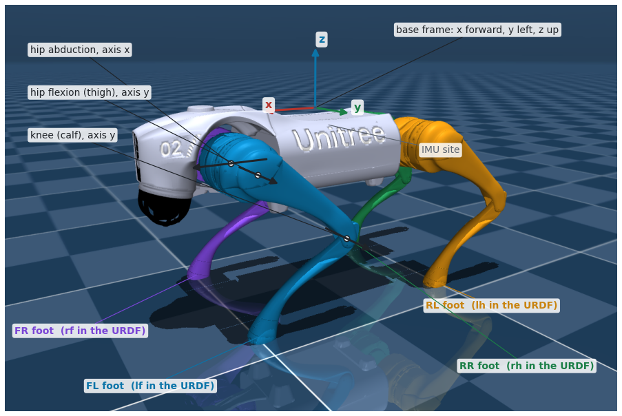
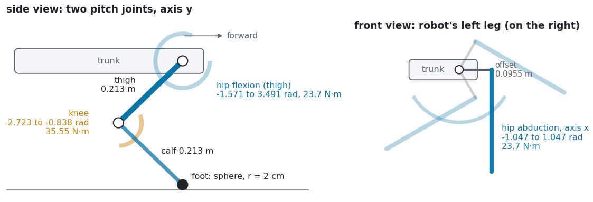
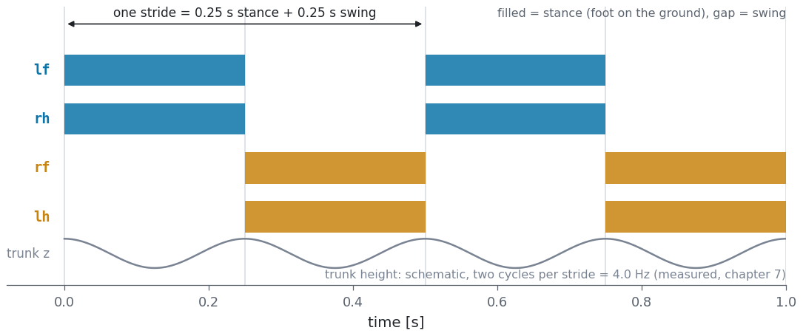
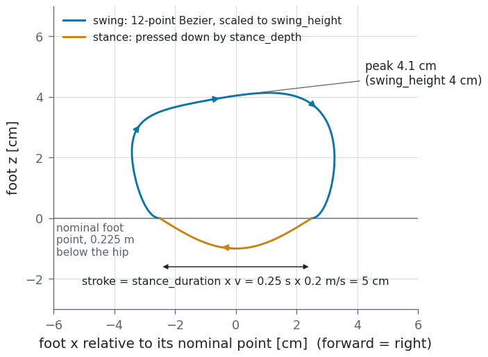
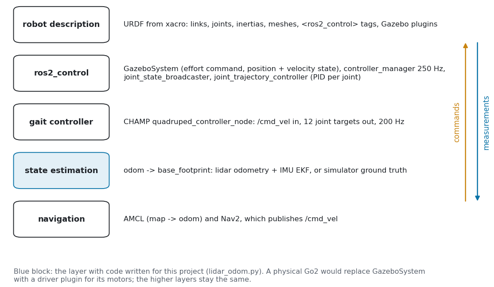
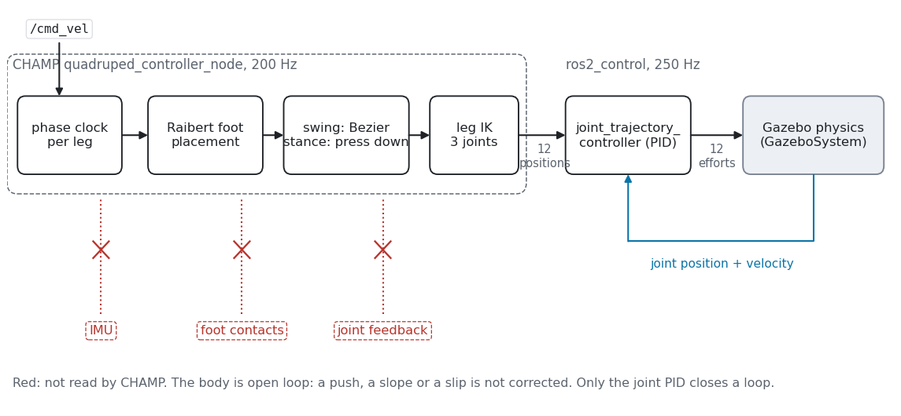
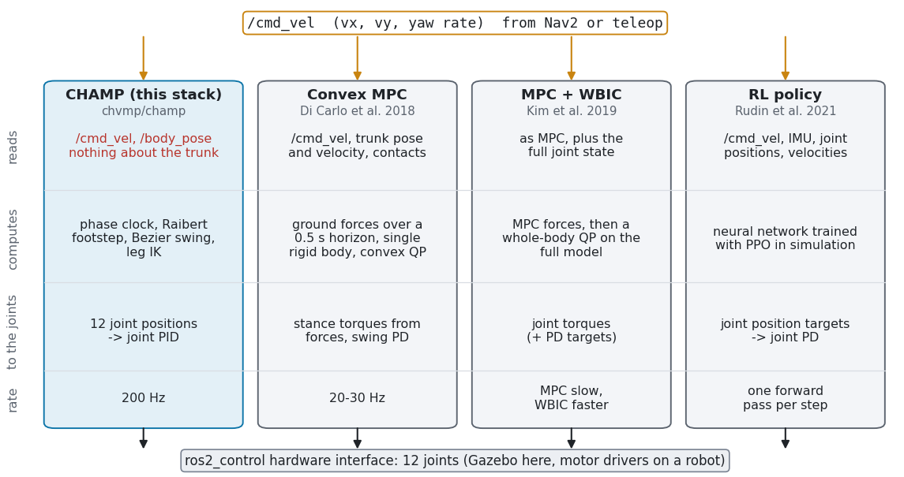
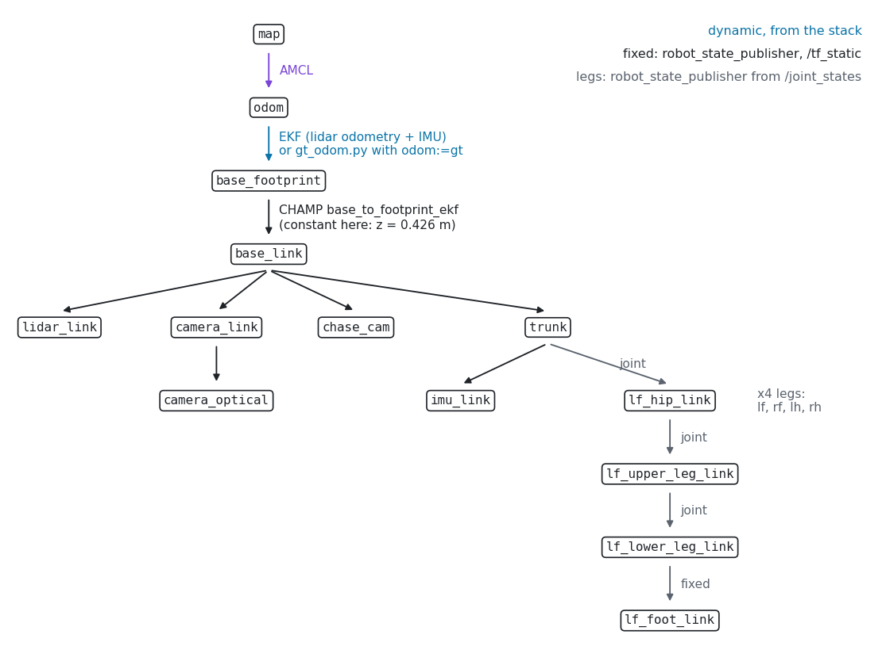
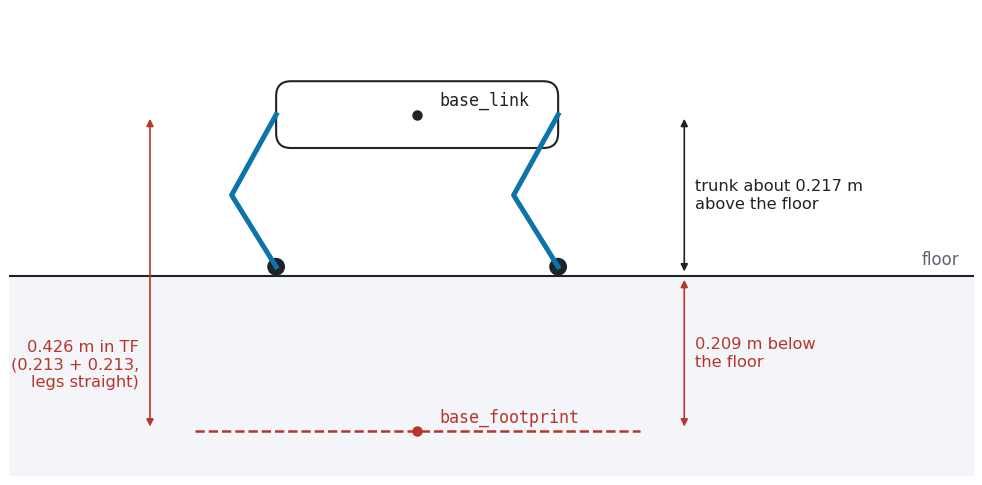
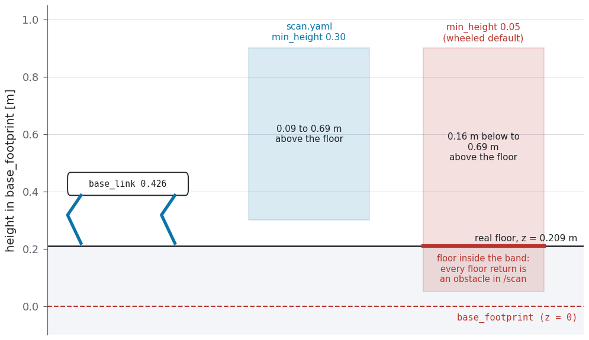

Start · Chapter 1
Legged robot foundations
Most ROS 2 tutorials assume a wheeled base. Its pose changes only when the wheels turn, wheel encoders give odometry, and a
diff-drive controller turns /cmd_vel into wheel speeds. A quadruped breaks each of these assumptions. This chapter finds the
differences in the Go2 files and maps them onto the layers of this stack.
| Goal | Read the Go2's joints, gait and frames from its files, and place its gait controller among the other ways to make a quadruped walk. |
| Time | 1.5 h |
| Before you start | Tasks 1 to 3 read files that scripts/setup.sh fetches (chapter 3, task 1). Without them, read the outputs shown here and run the commands later. Task 4.2 needs the running stack. |
| You will learn | what a floating base and switching contacts mean for ROS; what CHAMP reads and what it ignores; how CHAMP compares with model-predictive control and a learned policy; why base_footprint sits 0.426 m below base_link here. |
Task 1: Read the robot description
1.1 Count the joints and the mass
Objective: see from the URDF that the trunk is not attached to anything and the legs have 12 motors.
source env.sh
xacro src/go2_nav_sim/urdf/go2_nav.xacro > /tmp/go2.urdf
python3 - <<'EOF'
import xml.etree.ElementTree as ET
r = ET.parse('/tmp/go2.urdf').getroot()
j = [x for x in r.findall('joint') if x.get('type') == 'revolute']
print(len(j), 'revolute,', sum(x.get('type') == 'fixed' for x in r.findall('joint')), 'fixed')
for x in j[:3]:
l = x.find('limit'); print(x.get('name'), x.find('axis').get('xyz'), l.get('lower'), l.get('upper'), l.get('effort'))
print('mass %.2f kg' % sum(float(i.find('mass').get('value')) for i in r.iter('inertial')))
EOF
12 revolute, 11 fixed
rf_hip_joint 1 0 0 -1.0472 1.0472 23.7
rf_upper_leg_joint 0 1 0 -1.5708 3.4907 23.7
rf_lower_leg_joint 0 1 0 -2.7227 -0.83776 35.55
mass 15.10 kg
Check: 12 revolute joints, 15.10 kg.
The root link, base_link, has no parent joint, so the simulator (or an estimator, on hardware) supplies all six degrees of
freedom of the trunk pose. The joint called floating_base, between base_link and trunk, is fixed despite its name; Gazebo
gives every root link six free degrees of freedom. Each leg has three revolute joints. The left front leg, from const.xacro
and leg.xacro (the right legs mirror the hip limits):
| Joint | Name here | Axis | Range (rad) | Effort limit (N·m) |
|---|---|---|---|---|
| hip abduction / adduction | lf_hip_joint |
x | -1.047 to 1.047 | 23.7 |
| hip flexion (thigh) | lf_upper_leg_joint |
y | -1.571 to 3.491 | 23.7 |
| knee (calf) | lf_lower_leg_joint |
y | -2.723 to -0.838 | 35.55 |
The legs are lf, rf, lh and rh (left/right, front/hind). Unitree's own files call the same joints FL_hip_joint,
FL_thigh_joint and FL_calf_joint; a leftover config/_robot_control.yaml in go2_description still uses those names. The
foot is a fixed joint to a sphere of 2 cm radius.

The MuJoCo Menagerie Go2 with one colour per leg, the three joint axes of the front left leg and the base frame (x red, y green, z blue). Menagerie uses Unitree's leg names; the URDF in this stack uses lf, rf, lh, rh.

One leg of the URDF: link lengths and hip offset from const.xacro, the allowed range of each joint shaded, with its effort limit from the table. The pose drawn is only an example.
Common mistakes: xacro: command not found means the shell has not sourced env.sh.
Forward and inverse kinematics of one leg, checked against MuJoCo and Pinocchio, are in module 04; why the floating base cannot be actuated directly is in module 01.
Task 2: See how a trot moves the feet and the trunk
2.1 Read the gait parameters
Objective: find the numbers that set the stride.
grep -E 'max_|swing_height|stance_depth|stance_duration|nominal_height' \
src/third_party/unitree-go2-ros2/robots/configs/go2_config/config/gait/gait.yaml
max_linear_velocity_x : 0.3
max_linear_velocity_y : 0.25
max_angular_velocity_z : 0.5
swing_height : 0.04
stance_depth : 0.01
stance_duration : 0.25
nominal_height : 0.225
Check: stance_duration is 0.25 s. CHAMP clips /cmd_vel to the three max_ values.
A foot is either in stance (on the ground, carrying load) or in swing, and each switch changes which constraints act on the
body, several times per second. CHAMP walks with a trot: the diagonal pairs lf+rh and rf+lh swing together
(phase_generator.h). One stride is 0.25 s of stance plus 0.25 s of swing. The trunk height oscillates at 4.0 Hz while walking,
twice per stride (measured on /odom_gt).

Trot timing from phase_generator.h and gait.yaml: each diagonal pair is in stance for 0.25 s while the other pair swings. The trunk-height line is a sketch of the 4.0 Hz oscillation, not data.
The same trot played back on the MuJoCo Go2 at quarter speed, pairs coloured as above: CHAMP's foot path at 0.2 m/s turned into joint angles with the closed-form IK of modules/m04_kinematics. Kinematics only; no physics and no CHAMP code runs here.

One foot's path at 0.2 m/s, computed from the control points in trajectory_planner.h and the Go2 gait.yaml (swing_height 0.04 m, stance_depth 0.01 m, stance_duration 0.25 s). The swing overshoots the 5 cm stroke at both ends.
2.2 Note what the sensors on the trunk feel
Objective: know why sensor data from a legged robot shakes.
site/data/runs/w2/imu.json holds the IMU of recorded run w2 at about 20 samples per second, timed in seconds from the start
of the recording. The robot stood until about 10 s and walked from then on. This compares 6 s of standing with 20 s of walking:
python3 - <<'EOF'
import json
d = json.load(open('site/data/runs/w2/imu.json')); f = d['fields']
for name, t0, t1 in (('standing', 2, 8), ('walking', 20, 40)):
rows = [r for r in d['rows'] if t0 <= r[0] < t1]
print(name, ' '.join('%s %.1f to %.1f' % (k, min(r[f.index(k)] for r in rows), max(r[f.index(k)] for r in rows))
for k in ('az', 'gy', 'pitch_deg')))
EOF
standing az 7.0 to 12.4 gy -0.1 to 0.2 pitch_deg -0.5 to 0.0
walking az 4.6 to 18.8 gy -0.8 to 0.6 pitch_deg -2.8 to 1.1
Check: walking, the vertical acceleration az (m/s²) spans 14.2 m/s² against 5.4 m/s² standing, and the pitch rate gy
(rad/s) and the pitch angle span several times their standing range.
Walking at 0.2 m/s, the trunk height varied between 0.206 and 0.219 m, roll between -2.1 and 3.6 degrees and pitch between -2.0 and 1.9 degrees (chapter 7 has the command). A sensor bolted to the trunk sees all of that.
Ten seconds of the dashboard (media/go2_a2b_dashboard.mp4 from 0:40) while walking: the bottom row is the IMU on the trunk, and every step shows up in acceleration, angular rate and attitude.
There is no wheel odometry either. Joint encoders tell you where the feet are relative to the trunk; they tell you how the trunk moved only if you know which feet are on the ground and that they did not slip. That needs contact sensing, which this Gazebo setup does not have. Chapter 9 measures how far off CHAMP's leg odometry is here and what replaces it.
Task 3: Place CHAMP in the control stack
3.1 Find what CHAMP reads
Objective: see from the source that the gait controller gets no feedback about the trunk.
grep -n -A1 'create_subscription' src/third_party/unitree-go2-ros2/champ/champ_base/src/quadruped_controller.cpp
grep -n 'double loop_rate' src/third_party/unitree-go2-ros2/champ/champ_base/src/quadruped_controller.cpp
69: cmd_vel_subscription_ = this->create_subscription<geometry_msgs::msg::Twist>(
70- "cmd_vel/smooth", 10, std::bind(&QuadrupedController::cmdVelCallback_, this, std::placeholders::_1));
71: cmd_pose_subscription_ = this->create_subscription<geometry_msgs::msg::Pose>(
72- "body_pose", 1, std::bind(&QuadrupedController::cmdPoseCallback_, this, std::placeholders::_1));
49: double loop_rate = 200.0;
Check: two subscriptions only. cmd_vel/smooth is remapped to /cmd_vel in champ_bringup/launch/bringup.launch.py
(line 179).
CHAMP reads no IMU, no contact forces and no joint feedback, and it does not plan the motion of the centre of mass. Each cycle it
advances a phase clock per leg, places the next footstep with the Raibert heuristic, draws a Bezier swing curve, presses the
stance foot down by stance_depth, and solves inverse kinematics for each leg. The 12 joint positions go to the
joint_trajectory_controller, which turns position error into effort with the PID gains in ros_control.yaml. On flat ground
in simulation that is enough; a push, a slope or a slippery floor is not corrected. Chapter 7 changes the
gait parameters and measures the result.

The layers of this stack: commands go up from Nav2 to the joints, joint states and sensor data come back down. In ros2_control, gazebo_ros2_control/GazeboSystem offers effort commands and position and velocity states; on a physical robot a driver plugin takes its place and the layers above stay the same (chapter 6).

CHAMP's loop. The node also subscribes to /body_pose (not drawn). The inputs in red are never read, so the only feedback in the loop is joint position and velocity into the PID.
3.2 Compare CHAMP with other controllers
Objective: know what would replace CHAMP, and what would stay the same.
grep -n update_rate src/third_party/unitree-go2-ros2/robots/configs/go2_config/config/ros_control/ros_control.yaml
4: update_rate: 250 # Hz

Four ways to turn /cmd_vel into joint commands. CHAMP from its source (task 3.1); convex MPC from Di Carlo et al., IROS 2018; MPC with whole-body impulse control from Kim et al., arXiv 1909.06586; the RL policy from Rudin et al., CoRL 2021. Generated by docs/img/c00-01-controllers.py.
Convex MPC plans ground reaction forces for a single rigid body over a horizon of up to 0.5 s, solved as a convex QP in under
1 ms at 20 to 30 Hz. WBIC adds a faster whole-body QP on the full model that turns those forces into joint torques. An RL policy
is a neural network trained in simulation that maps the command and proprioception to joint targets. All three read the trunk
state, which CHAMP does not. All four take the same /cmd_vel and drive the same ros2_control joints, so Nav2 and everything
above it would not change. None of the other three is part of this repository.
Check: update_rate is 250 Hz. At that rate ros2_control runs the joint PID under every column of the figure; CHAMP sends new
joint targets at 200 Hz (loop_rate in 3.1) and, in the figure, is the only column that reads nothing about the trunk.
Task 4: Find where the trunk frame sits
4.1 Read the frame table
Objective: know which node publishes each frame.
The fixed frames come from the URDF you made in 1.1. This prints each fixed joint as parent and child, without the four feet:
python3 - <<'EOF'
import xml.etree.ElementTree as ET
r = ET.parse('/tmp/go2.urdf').getroot()
for j in r.findall('joint'):
if j.get('type') == 'fixed' and 'foot' not in j.get('name'):
print(j.find('parent').get('link'), '->', j.find('child').get('link'))
EOF
base_link -> trunk
trunk -> imu_link
base_link -> lidar_link
lidar_link -> lidar_visual
base_link -> camera_link
camera_link -> camera_optical
base_link -> chase_cam
| Frame | Meaning | Published by |
|---|---|---|
map |
fixed, globally consistent | AMCL (map to odom) |
odom |
continuous, drifts slowly | gt_odom.py with odom:=gt, or the EKF in estimation.launch.py |
base_footprint |
the trunk projected onto the ground, yaw only | CHAMP's base_to_footprint_ekf (base_footprint to base_link) |
base_link |
trunk origin, root of the URDF | |
trunk, imu_link, lidar_link, ... |
fixed children of base_link |
robot_state_publisher |
| leg links | follow the 12 joints | robot_state_publisher from /joint_states |

The TF tree drawn from go2_nav.xacro, sensors.xacro and the upstream robot.xacro, with who publishes each moving edge. imu_link and the legs hang from trunk, the sensors from base_link.
The usual split is that odom to base_footprint carries x, y and yaw, and base_footprint to base_link carries the trunk
height, roll and pitch, so that TF can level a lidar mounted on base_link.
Check: imu_link hangs from trunk, and the lidar and camera from base_link, as in the figure. No line contains map,
odom or base_footprint: those edges move, so a node publishes them (the table), not the URDF.
4.2 Measure base_footprint to base_link
Objective: see that the second transform does not move in this simulation. Run it with the stack up (chapter 3, task 2).
ros2 run tf2_ros tf2_echo base_footprint base_link
ros2 topic info /foot_contacts
At time 16.720000000
- Translation: [0.000, 0.000, 0.426]
- Rotation: in Quaternion (xyzw) [0.000, 0.000, 0.000, 1.000]
Type: champ_msgs/msg/ContactsStamped
Publisher count: 0
Subscription count: 1
Check: the translation stays at 0.426 m whether the robot stands or walks, and /foot_contacts has no publisher.
This is a known open issue of the stack. CHAMP's state_estimation_node synchronises /joint_states with /foot_contacts, and
nothing publishes /foot_contacts here: the patch removed the Gazebo contact node, and the controller publishes contacts only
when publish_foot_contacts is true and gazebo is false. The 0.426 m is the pose with all joint angles at zero, legs straight
down, 0.213 + 0.213 m (thigh and calf lengths in const.xacro). The real trunk is about 0.217 m above the floor, so
base_footprint lies 0.209 m below the floor. Trunk roll and pitch do not reach TF, and gt_odom.py publishes x, y and yaw
only. Code that needs gravity alignment should take roll and pitch from /imu/data. In this simulator the IMU orientation
equals ground truth (RMS difference 0.000 degrees against /odom_gt over 252 samples while walking), which a real IMU will not
do.

Where base_footprint ends up in this simulation; vertical distances to scale.
Exercise
src/go2_nav_sim/config/scan.yaml turns the 3D lidar into the 2D /scan and keeps only points with min_height: 0.30 to
max_height: 0.90, measured in target_frame: base_footprint. Using 4.2, which band above the real floor is that? What would a
value of min_height: 0.05, common on wheeled robots, do here?
Answer: the floor is 0.209 m above base_footprint (0.426 − 0.217 m), so the band is about 0.09 to 0.69 m above the floor. With
min_height: 0.05 the floor itself, at 0.21 m in base_footprint, falls inside the band, and every floor return becomes an
obstacle in /scan. The comment at the top of scan.yaml gives the same numbers.

The two bands of the exercise drawn in base_footprint, with the floor where 4.2 puts it.
Further reading
- R. Tedrake, Underactuated Robotics: https://underactuated.csail.mit.edu/
- M. Raibert, Legged Robots That Balance, MIT Press, 1986: https://books.google.com/books?id=EXRiBnQ37RwC
- P. Wensing et al., "Optimization-based control for dynamic legged robots", T-RO 2024: https://arxiv.org/abs/2211.11644